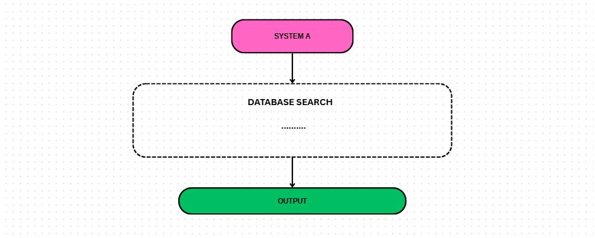
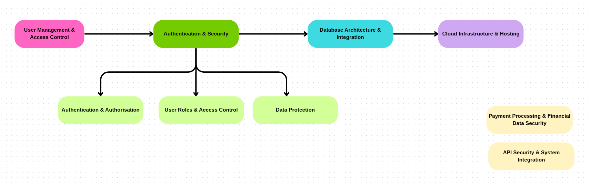

I work on a healthcare data project that sits between medical terminology, health informatics, and security. As several systems come together into one shared platform, I help look at how data is structured, how it moves, and what needs to be protected along the way.

I support a health informatics project focused on making healthcare data easier to share and understand across different countries and organizations. The work involves bringing several existing systems together into one platform so medical information can be used more consistently.
Because the platform handles sensitive healthcare data, security cannot be something added at the end. Understanding where information comes from, how it moves, and who should have access to it is part of the work from the start. Specific systems and organizational details stay confidential.
One thing I've learned is that security is rarely a one-time exercise. As systems change, the risks change with them.
Part of my work is helping build a risk assessment process that keeps growing alongside the platform. I map data flows, identify trust boundaries, and write down the areas that need more attention, so the security picture stays clear as the project moves forward. The goal is to make something that stays useful through the whole life of the project.

Technical work only matters when people understand it. I share findings through reports, diagrams, discussions, and visual artifacts that help both technical and non-technical people follow what is going on, things like data flow diagrams and decision trees that make complex ideas easier to read.
The part I enjoy most is translating between perspectives. My medical background helps me understand the clinical side, and my security training helps me think through the technical and security side. A lot of my work happens right at that meeting point.